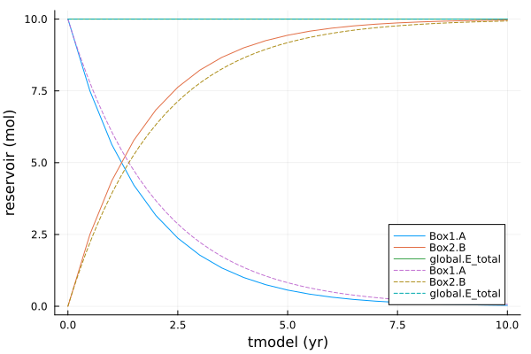
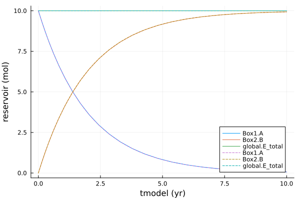

ODE solvers
These examples use of different ODE solvers for Example 5 Isotopes and Rayleigh fractionation
Naive first-order explicit Euler 'by hand'
This example demonstrates a naive approach using first-order explicit Euler to integrate the two state variables Box1.A and Box2.B forward in time, using a fixed timestep of 0.5 yr. This can be useful for testing, but for convenience and accuracy for practical use, it is usually better to use the PALEOmodel wrappers for the Julia SciML solvers, see https://paleotoolkit.github.io/PALEOmodel.jl/stable/PALEOmodelSolvers/.
This is NOT recommended except for testing - use the PALEOmodel wrappers for the solvers from the Julia SciML ecosystem, as described below.
The script to run the model (file examples/reservoirs/run_ex5.yaml) contains:
import PALEOboxes as PB
import PALEOmodel
using Plots
include(joinpath(@__DIR__, "../reservoirs/reactions_ex5.jl"))
#####################################################
# Create model
#######################################################
model = PB.create_model_from_config(
joinpath(@__DIR__, "../reservoirs/config_ex5.yaml"),
"example5"
)
#########################################################
# Initialize
##########################################################
initial_state, modeldata = PALEOmodel.initialize!(model)
tspan = (0.0, 10.0)
dt = 0.5
# get nested NamedTuples with data arrays for every Variable in the model
all_vars = PB.VariableAggregatorNamed(modeldata)
all_values = all_vars.values # nested NamedTuples
# create an object to hold output
output_euler = PALEOmodel.OutputWriters.OutputMemory()
nsteps = floor(Int, (tspan[2] - tspan[1])/dt)
PALEOmodel.OutputWriters.initialize!(output_euler, model, modeldata, nsteps+1; rec_coord=:tmodel)
#################################################################
# Integrate vs time
##################################################################
println("integrate, using first-order explicit Euler 'by hand'")
# set initial time
tmodel = tspan[1]
# step number
n = 0
# loop over time steps, taking a zero last timestep to save output
while tmodel <= tspan[2] && n <= nsteps
# calculate time derivative (_sms Variables)
PB.do_deriv(modeldata.dispatchlists_all)
# add record to output
PALEOmodel.OutputWriters.add_record!(output_euler, model, modeldata, tmodel)
# account for a short (or zero) last timestep
global dt_actual = min(dt, tspan[2] - tmodel)
# naive first order explicit Euler for our two state Variables
# (advances state variable from tmodel -> tmodel + dt)
all_values.Box1.A .+= dt_actual .* all_values.Box1.A_sms
all_values.Box2.B .+= dt_actual .* all_values.Box2.B_sms
global tmodel += dt_actual # update tmodel to time we have now stepped to
global n += 1
end
############################
# Table of output
###########################
# vscodedisplay(
# PB.get_table(output_euler, ["Box1.A", "Box2.B", "global.E_total", "Box1.decay_flux", "fluxBoxes.flux_B"]),
# "Example 5"
# )
########################################
# Plot output
########################################
display(plot(output_euler, ["Box1.A", "Box2.B", "global.E_total"]; ylabel="reservoir (mol)"))
display(plot(output_euler, ["Box1.A.v_moldelta", "Box2.B.v_moldelta", "global.E_total.v_moldelta"]; ylabel="reservoir (mol * delta)"))
display(plot(output_euler, ["Box1.decay_flux", "fluxBoxes.flux_B"]; ylabel="flux (mol yr-1)"))
display(plot(output_euler, ["Box1.A_delta", "Box1.decay_flux.v_delta", "Box2.B_delta", "global.E_total.v_delta", ]; ylim=(-20, 100), ylabel="delta (per mil)"))And produces output (solid lines, dashed lines show accurate output from CVODE solver):

Note that although isotope mass balance is maintained, and the final state for B is correct, the Rayleigh fractionation of A is inaccurate due to the coarse timestep and inaccuracy of the first-order explicit Euler method.
PALEOmodel default SUNDIALS CVODE solver
This repeats Example 5 Isotopes and Rayleigh fractionation, which uses the PALEOmodel.ODE.integrate wrapper function for the solvers in the Julia SciML ecosystem. The PALEOmodel default solver (set by the alg argument) is SUNDIALS CVODE. This is a stiff solver that requires a Jacobian, either (as here) calculated using finite differences or passed explicitly, where PALEOmodel includes options to calculate a sparse Jacobian using automatic differentiation.
Options solvekwargs are passed through to the SciML solve method, see https://diffeq.sciml.ai/dev/basics/common_solver_opts/.
The script to run the model (file examples/reservoirs/run_ex5.jl) contains:
import PALEOboxes as PB
import PALEOmodel
using Plots
import Sundials
include(joinpath(@__DIR__, "reactions_ex5.jl"))
#####################################################
# Create model
#######################################################
model = PB.create_model_from_config(joinpath(@__DIR__, "config_ex5.yaml"), "example5")
#########################################################
# Initialize
##########################################################
initial_state, modeldata = PALEOmodel.initialize!(model)
#####################################################################
# Optional: call ODE function to check derivative
#######################################################################
initial_deriv = similar(initial_state)
PALEOmodel.ODE.ModelODE(modeldata)(initial_deriv, initial_state , nothing, 0.0)
println("initial_state: ", initial_state)
println("initial_deriv: ", initial_deriv)
#################################################################
# Integrate vs time
##################################################################
# create a Run object to hold model and output
paleorun = PALEOmodel.Run(model=model, output = PALEOmodel.OutputWriters.OutputMemory())
println("integrate, ODE")
# first run is slow as it includes JIT time
@time PALEOmodel.ODE.integrate(
paleorun, initial_state, modeldata, (0.0, 10.0);
alg=Sundials.CVODE_BDF(), # this is the PALEOmodel default
solvekwargs=(
reltol=1e-5,
# saveat=0.1, # save output every 0.1 yr see https://diffeq.sciml.ai/dev/basics/common_solver_opts/
)
);
############################
# Table of output
###########################
# vscodedisplay(
# PB.get_table(paleorun.output, ["Box1.A", "Box2.B", "global.E_total", "Box1.decay_flux", "fluxBoxes.flux_B"]),
# "Example 5"
# )
########################################
# Plot output
########################################
display(plot(paleorun.output, ["Box1.A", "Box2.B", "global.E_total"]; ylabel="reservoir (mol)"))
display(plot(paleorun.output, ["Box1.decay_flux", "fluxBoxes.flux_B"]; ylabel="flux (mol yr-1)"))
display(plot(paleorun.output, ["Box1.A_delta", "Box1.decay_flux.v_delta", "Box2.B_delta", "global.E_total.v_delta", ]; ylabel="delta (per mil)"))and produces output showing Rayleigh fractionation:
Using a non-default solver
Recommended SciML solvers are documented at https://diffeq.sciml.ai/stable/. As this system is not stiff (no short timescales) the SciML Tsit5 solver is also a good choice, set using the alg argument to PALEOmodel.ODE.integrate (this is passed through to the SciML solve method).
The script to run the model (file examples/reservoirs/run_ex5.yaml) with this solver contains:
import PALEOboxes as PB
import PALEOmodel
using Plots
import OrdinaryDiffEq
include(joinpath(@__DIR__, "../reservoirs/reactions_ex5.jl"))
#####################################################
# Create model
#######################################################
model = PB.create_model_from_config(joinpath(@__DIR__, "../reservoirs/config_ex5.yaml"), "example5")
#########################################################
# Initialize
##########################################################
initial_state, modeldata = PALEOmodel.initialize!(model)
#####################################################################
# Optional: call ODE function to check derivative
#######################################################################
initial_deriv = similar(initial_state)
PALEOmodel.ODE.ModelODE(modeldata)(initial_deriv, initial_state , nothing, 0.0)
println("initial_state: ", initial_state)
println("initial_deriv: ", initial_deriv)
#################################################################
# Integrate vs time
##################################################################
# create a Run object to hold model and output
paleorun = PALEOmodel.Run(model=model, output = PALEOmodel.OutputWriters.OutputMemory())
println("integrate, ODE")
# first run is slow as it includes JIT time
@time PALEOmodel.ODE.integrate(
paleorun, initial_state, modeldata, (0.0, 10.0);
alg=OrdinaryDiffEq.Tsit5(), # recommended non-stiff solver, see https://diffeq.sciml.ai/stable/solvers/ode_solve/
solvekwargs=(
reltol=1e-5,
# saveat=0.1, # save output every 0.1 yr, see https://diffeq.sciml.ai/dev/basics/common_solver_opts/
)
);
############################
# Table of output
###########################
# vscodedisplay(
# PB.get_table(paleorun.output, ["Box1.A", "Box2.B", "global.E_total", "Box1.decay_flux", "fluxBoxes.flux_B"]),
# "Example 5"
# )
########################################
# Plot output
########################################
display(plot(paleorun.output, ["Box1.A", "Box2.B", "global.E_total"]; ylabel="reservoir (mol)"))
display(plot(paleorun.output, ["Box1.decay_flux", "fluxBoxes.flux_B"]; ylabel="flux (mol yr-1)"))
display(plot(paleorun.output, ["Box1.A_delta", "Box1.decay_flux.v_delta", "Box2.B_delta", "global.E_total.v_delta", ]; ylabel="delta (per mil)"))As expected the output using Tsit5 (solid lines) and CVODE_BDF (dashed lines) is indistinguishable as both solvers will maintain relative accuracy within the specified reltol=1e-5:
